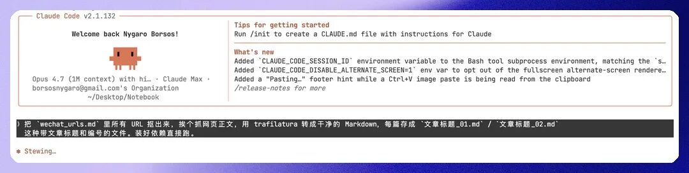
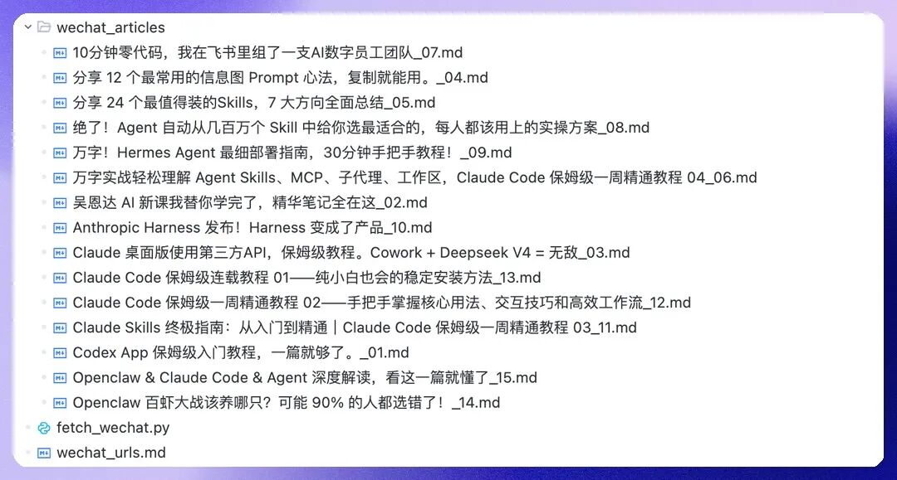
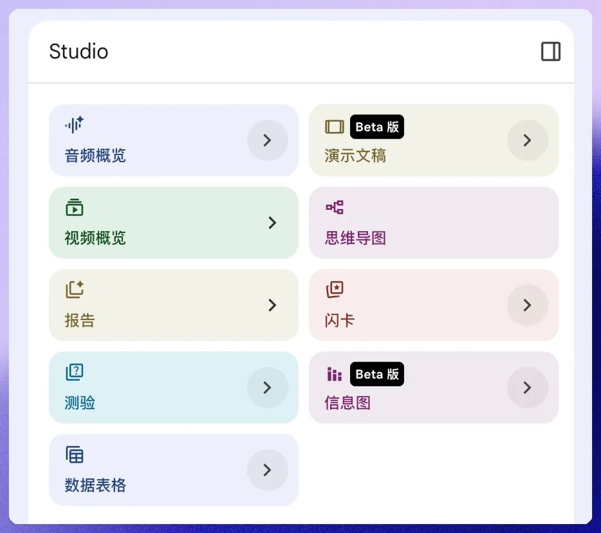
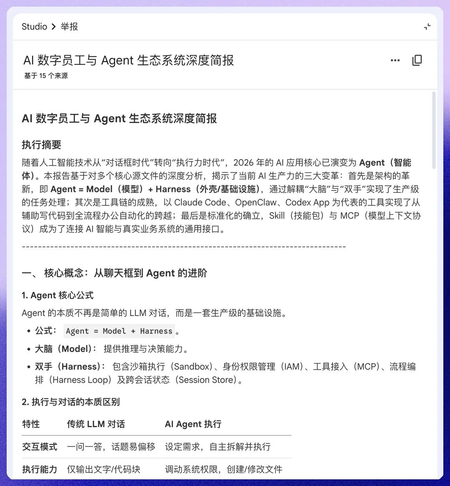

稳定抓取公众号文章 + NotebookLM快速学习流程，保姆级教程
📝 编辑: 大刘
🎨 排版: 大刘
相信大家和我一样，微信收藏夹都有不少技术文章。
但最真实的就是，收藏夹这东西吧，有个特点，就是里面的知识都好都重要，但就是从来没看过。
我看了下我的，2026 年，47 篇。全是技术文。我当时跟自己说「这个一定要看」，然后就再也没打开过。
每一篇当时都说服了自己「有用」。然后集体烂在收藏夹里。
我突然有点烦。
烦的不是没读，是骗了自己半年。点收藏那一下我以为我学到了，其实我只是把焦虑搬了个家。从「我没看过」搬到「我以后会看」，然后那个「以后」就一直不来。
收藏夹不是知识库，是坟场。
所以，我花一个小时打磨了一套流程，让我快速“学习”掌握收藏夹里的文章内容，并且我准备把这个流程持续用起来。
下面我把那 1 小时里做的每一步，按由浅入深的顺序拆开。
从稳定爬取公众号收藏夹文章，到把它们灌进 NotebookLM，到一步步用上 NotebookLM 越来越深的学习功能，让那堆吃灰收藏真正活起来。
一次性手把手，完成所有步骤。现在开始！
一. 导出：把吃灰的文章自动从收藏夹里抠出来
事情得从导出说起。都知道文章是有很强的反爬机制的。
所以这是最复杂的一步。实际花了 15 分钟。对，最复杂的一步，也就 15 分钟。
这里给大家分享我获取微信收藏文章内容的方法。
老老实实手动：每篇点开「复制链接」，把 47 个 URL 黏在一个 links.md 文件里。大概 10 分钟。

剩下的 5 分钟我没自己写脚本。把 links.md 丢给 Claude Code，说了一句话：
把
links.md里所有 URL 抠出来，挨个抓网页正文，用 trafilatura 转成干净的 Markdown，每篇存成文章标题_01.md/文章标题_02.md这种带文章标题和编号的文件。装好依赖直接跑。
回车。Claude Code 自己装了 trafilatura，写完脚本，跑完，47 个 .md 文件躺在我文件夹里。我从头到尾没碰过键盘上一行 Python。
如果你好奇 Claude Code 大概写了什么。10 行而已，长这样：
import re, sys, trafilatura
text=open(sys.argv[1],encoding="utf-8").read()
urls=re.findall(r"https?://[^\s)\]]+",text)
fori,urlinenumerate(urls,1):
html=trafilatura.fetch_url(url)
md=trafilatura.extract(html,output_format="markdown")or""
open(f"{i:02d}.md","w",encoding="utf-8").write(md)
print(f"[{i}/{len(urls)}] {url}")
但说实话，你不用看懂这段。把上面那句 prompt 直接丢给 Claude Code 就完事了。

其实丢给 Codex、Trae、Openclaw、Hermes 都可以，只有是个 AI Agent。
这就是 2026 年用 AI 的正确姿势：以前是「自己学会 Python 才能批处理一坨数据」，现在是「把任务描述清楚扔给 AI，自己看结果」。这个 5 行脚本省下来的不是 5 行代码，是「我得先去学 Python」那道门槛。
PDF 还是 Markdown 我也犹豫过。NotebookLM 两个都吃，但 Markdown 上传以后它的「引用回溯」做得明显更准。它给你回答的时候会精确引到第几段，PDF 经常引到一整页。
那么现在，资料库就准备好了。
二. 上传：47 个 source 全部就位
打开 NotebookLM，新建一个笔记本。
把 47 个 Markdown 拖进 NotebookLM 左侧的 Sources 面板，那个面板唰唰唰跳出来。
开始转圈。
刚上手 NotebookLM，它的能力边界先简单了解下：
1. 单 source 容量上限：500,000 字 / 200MB。一篇公众号文章再长也撑不破。
2. 支持的格式：PDF、Google Docs / Slides、Word、Markdown、txt、网页 URL（直接贴链接它会自己抓）、YouTube 视频（自动转字幕）、音频文件（自动转写）。
3. Markdown 优先：前面说过，引用回溯精度比 PDF 好一档。
还有一个常被忽视的功能叫 Discover Sources。直接给一个主题词，NotebookLM 会自己去网上搜相关一手资料补进 Sources 列表。我后来用这个功能，让它围绕 "Computer Use" 主题自动补了 8 篇英文论文和报道进我的 47 篇集合，这是手动找绝对找不全的。
半年的「以后再看」第一次被一次性管理起来了，每个加载好的文章对应当时那个「我以后会读」的承诺。
三. 第一个动作：直接问 + 看引用
上传完先别急着用花哨功能。打开 notebook，右侧那个 chat 输入框，直接问。
我问的第一个问题：「这里关于 Agent 的核心争论是什么？分歧在哪里？」
回答出来不到 10 秒。一段大约 400 字的浓缩，每个判断后面都跟着一个引用编号。[1][12][34] 这种。
这个引用编号才是 NotebookLM 跟 ChatGPT 最大的区别。
点一下 `[5]`，左侧 Sources 面板自动跳到第 5 篇文章，对应段落整段高亮。
也就是说它告诉你的每一句话，都能溯源到原文具体哪一段。如果某个判断它不肯说，多半是因为 sources 里确实没支撑。这本身就是有用信息。
我之前用 ChatGPT 处理类似场景最大的不爽，是它会编造看起来很顺的回答，你没法验证哪些是真的、哪些是模型幻觉。NotebookLM 把这个问题在产品层面解掉了：所有回答都绑在 sources 上，不允许调用通用知识填充。
这一步什么花哨配置都没改，纯默认。光是「直接问 + 点引用看原文」这一条，已经能解决 80% 的"我有一堆资料但读不完"场景。
那么问什么问题？
了解全貌、重点总结、学习建议等等，你想得到的都可以问。
四. Studio 一键生成：把 47 篇变成不同形态
聊几轮之后再看右下角的 Studio 面板。这是 NotebookLM 真正的工作台。一键就能把同一批 sources 转成 9 种完全不同的形态：
1. 思维导图（Mind Map）：可点击展开折叠的主题树。我那 47 篇被它自动归到 5 个主题分支：Agent 与 Workflow / Computer Use / Vibe Coding / Skills 工程化 / 大模型评测。点任何一个分支可以展开下层细节，点叶节点直接列出相关 source。这是我「找盲区」的主要工具。哪条主线下面只有 2 篇收藏，说明这个领域我还没建立认知。
2. 报告（Reports）：一个伞形分类，里面装着四种结构化文档：
3. 简报（Briefing Doc）：约 1500 字结构化摘要，类似一份执行简报。技术综述用这个，浓度最高。
4. FAQ：自动从 sources 抽 Q&A，覆盖核心争论。「快速过一遍」的最佳形态。
5. 学习指南（Study Guide）：章节梳理 + 重点提炼。系统学一个新领域用这个。
6. 时间线（Timeline）：按时序抽取事件。跨时间维度的报道集合用这个最好。比如想看 Agent 这个概念从去年到今年的演进。
7. 音频概览（Audio Overview）/ 视频概览（Video Overview）：杀手功能，下一节单独讲。
8. 演示文稿（Presentation，Beta）：从 sources 一键生成 PPT 风格的幻灯片，每页带要点 + 来源引用。开会要用某个主题的简报、又懒得自己排版，这个最快。
9. 闪卡（Flashcards）：自动从 sources 抽核心知识点做成正反卡片。系统学一个领域时配学习指南一起用，可以把「读完」和「记住」拆开。
10. 测验（Quiz，Beta）：基于 sources 出选择题。读完一批材料后用这个自测。它出的题往往戳到你以为懂了但其实没懂的地方。
11. 信息图（Infographic）：把核心数据 / 流程 / 对比关系做成一张图形海报。给团队群发或社交分享专用。
12. 数据表格（Data Tables）：从非结构化文本里抽出结构化数据表。我用它跨 source 比较过 5 篇 Agent 框架综述里各家的「上下文长度 / 工具调用方式 / 价格」NotebookLM 表里每个位置都带回溯引用。

2026 年起 Studio 还做了一件事：每次生成不再覆盖前一份。同一份简报你可以基于不同 sources 子集、不同自定义指令生成 N 个版本，全部留在 Studio 历史里。这意味着 Studio 是一个迭代过的产物归档，不只是即时生成器。
我自己的搭配习惯：
▸ 技术领域综述 → 简报 + 思维导图配合
▸ 跨时间报道集合 → 时间线 + 音频概览
▸ 系统学新主题 → 学习指南 + 闪卡 + 测验三件套
▸ 给同事发简报 → FAQ + 演示文稿
▸ 跨 source 做数据对比 → 数据表格
比如说，我让他给我出个简报。

真不错。
到这一步还都是「点一下出结果」的级别，没碰到任何高级配置。
如果你只想把吃灰收藏快速盘活，到这里基本够用了。
五. Audio Overview：让三篇打架的文章替我吵起来
Audio Overview 也在 Studio 面板里，但它配得上单独一章。这是 NotebookLM 真正的杀手功能。
我做的第一件事，不是让它总结，是让它吵架。
点 Audio Overview 按钮，默认会生成一段约 10 分钟的双主持人英文对话播客。但默认不是它最强的形态。点旁边的 Customize 按钮，可以做三件事：
1. 指定聚焦的 sources：从 47 个里勾选具体的几篇让它只用这几篇
2. 写自定义生成指令：比如「两位主持人就 X 主题做对抗性辩论」
3. 选时长：Brief（~2 分钟）/ Default（~10 分钟）/ Longer（最长可达 ~50 分钟）/ Deep Dive
那 47 篇里有 3 篇关于「Agent 是不是噱头」的文章，立场完全对立。一篇是某硅谷工程师写的「Agent 就是套了壳的工作流」，一篇是国内一个产品经理写的「Agent 会重构整个 SaaS」，第三篇更狠，标题大意是「我用 Manus 一周后，Agent 这个词应该被禁用」。
这三篇我半年前各自收藏的时候都点了头，三个时刻三个我，没串过。
我让 NotebookLM 只用这三篇做 source，自定义指令写成「两位主持人针对『Agent 是不是噱头』做 13 分钟对抗性辩论，每人引用具体观点」。
戴上耳机出门散步的时候听完了。13 分钟，我听到了我自己半年来对这个话题的全部摇摆。
有时间你也听一听。（声音真好听，内容也无敌）
Audio Overview 已经支持 50+ 语种。把默认 voice 切到中文，用同样的方式可以生成中文播客，主持人语气、节奏、断句都符合中文播客习惯。
2026 年 4 月底还出了 Cinematic Video Overview。同样的内容生成视频版，自动幻灯片配字幕，目前对 Plus / Ultra 用户开放。我也试过，把那段 13 分钟的辩论变成视频以后，视觉锚定让信息留存率明显高一档。适合发给团队，比纯音频接受度高。
Audio Overview 不是省读时间，是把孤岛文章接成对话。
六. 我推荐的工作流
把上面这一整套打通之后，我每周日下午半小时，做一件事。
把这一周新收的文章导出成 Markdown（同样那段 prompt 丢给 Claude Code），直接塞进 notebook。
工作日想到一个问题，打开对应的 notebook 直接问，看引用回原文，10 秒解决，不用再翻收藏夹。
周末有空写一篇综述，就在 Studio 里生成简报 + 思维导图先看全局，再用「报告」里的学习指南或闪卡把核心知识点固化下来。读过的东西第一次真的留在脑子里。
不用再担心收藏吃灰了，因为收藏从「我以后会看」变成了「我下周日会被一起处理」。
一个明确的、最多 7 天会兑现的承诺。
每周 30 分钟换来一周的清爽。
七.写在最后
其实，写到最后我真正想说的，不是「打开收藏夹复制链接」。那只是动作。
我想说的是，我们这一代最熟练的句子之一，叫「下次一定」。
收藏一篇技术文，「下次一定看」。
关注一个不错的号，「下次一定追」。
存了一份课程，「下次一定学」。
但「下次」从来不会自己来。「下次一定」不是承诺，是自我安慰，是把"我没学"翻译成"我准备学"，让心里那个"我还在进步"的错觉再撑一晚。
收藏夹之所以是坟场，不是因为文章不好，是因为我们一直在用「收藏」这个动作替代「学习」这个动作。手指点一下心就安了，然后再也不想了。
NotebookLM 没法替你学。但它给了一个兜底：一个让「读完」真的发生的兜底。
我这篇文章做的，就是帮你把知识取出来，然后放进去。
帮你用一个流程。
来兑现一个更好的自己的承诺。
学习这件事其实没那么神圣。它需要的不是更多的决心，是更短的反馈链路。
把链路缩短到 7 天。然后，开始你的第一个 notebook。
以上，既然看到这里了，
如果觉得不错，随手点个赞、在看、转发三连吧，
如果想第一时间收到推送，也可以给我个星标⭐～
谢谢你看我的文章
你的关注是我持续更新的动力～
我是谁
我是 AI大刘，北大毕业，大模型研究方向，腾讯犀牛鸟，先后在腾讯、百度的大模型研发部门，现在给多家国企做AI顾问（也期待大家和我咨询交流